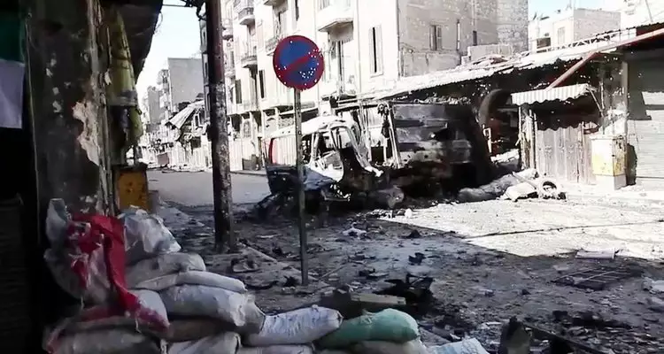

O QUE SÃO GUERRAS
ㅤAs guerras são conflitos armados que acontecem por diferentes razões:
religião, política, economia e conflitos territoriais.
ㅤPodemos diferenciar as guerras entre a civil e o conflito armado entre países. Na guerra civil , apesar de existir a força militar, não há uma ameaça externa
e sua característica é a participação da população.
ㅤApesar de não existir uma ameaça externa, a Guerra Civil é um conflito violento,
nele existem grupos organizados dentro do país que disputam o poder.
O objetivo é assumir o controle de determinada região ou da nação.
ㅤUma outra maneira de ocorrer a Guerra Civil
é quando o Estado luta contra um grupo formado por pessoas ligadas a um
determinado movimento ou partido.
Em qualquer dessas situações existem várias vítimas.
A ocorrência da Guerra Civil em países com governos autoritários é mais comum, mas não uma regra.

Cenário de destruição após combate em Alepo, durante Guerra Civil na Síria que acontece desde 2011. (Foto: Wikipedia)